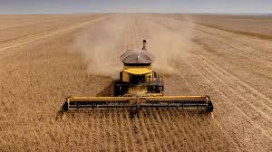

"Festejando a conexão campo-cidade"
Este site tem como objetivo apresentar ideias para o Concurso Agrinho 2025. Aqui irei abordar temas sobre a tecnologia no campo e inovações tanto no âmbito rural quanto urbano! Se você se interessa mais sobre o assunto, clique nesse link para ter acesso a todo o regulamento do projeto.
clique aqui! O Concurso Agrinho é uma iniciativa do SENAR-PR que estimula a produção de textos, desenhos e projetos ligados ao meio rural, à cidadania e à responsabilidade social. É um dos maiores programas de educação do Brasil!
O tema oficial ainda será divulgado. No entanto, é possível se preparar com base em temas anteriores, como sustentabilidade, alimentação saudável, tecnologias no campo e cidadania rural.
• Redação: "O campo que alimenta o futuro"
• Desenho: Plantio sustentável e feliz
• Projeto escolar: Horta comunitária na escola
Você sabia que o Paraná é um dos maiores produtores de alimentos do Brasil? E que a tecnologia no campo tem aumentado a produtividade e reduzido impactos ambientais?